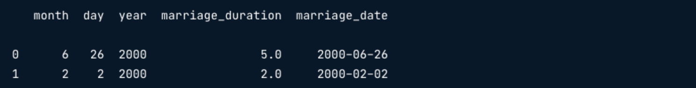

divorce = pd.read_csv("divorce.csv")
divorce.head()Relaciones en los datos
Las variables de los conjuntos de datos tienen relaciones entre sí. En este capítulo, examinarás las relaciones entre datos numéricos, categóricos e incluso DateTime, explorando la dirección y la fuerza de estas relaciones, así como las formas de visualizarlas.
Patrones a lo largo del tiempo

Importando data DateTime
- DataTime necesita ser explicitamente declarada en pandas
divorce.dtypes
divorce = pd.read_csv("divorce.csv", parse_dates=["marriage_date"])
divorce.dtypes
Conviritiendo los datos a DataTime
pd.to_datetime()convierte los argumentos de datos DateTime
divorce['marriage_date'] = pd.to_datetime(divorce['marriage_date'])
divorce_dtypes
- Creando datos DateTime
divorce.head(2)
divorce['marriage_date'] = pd.to_datetime(divorce[['month', 'day', 'year']])
divorce.head(2)
Es posible extraer sólo el mes, el día o el año de una columna que contenga una fecha completa, usando los atributos dt.month, dt.day y dt.year.
divorce['marriage_month'] = divorce['marriage_date'].dt.month()
divorce.head()
- Visualizando patrones a lo largo del tiempo
sns.lineplot(data=divorce, x='marriage_month', y='marriage_duration')
plt.show()
Los amplios intervalos de confianza sugieren que se necesita más análisis.
Importar datos DateTime
¡Ahora trabajarás con todo el conjunto de datos del divorcio! Los datos desciben los matrimonios mexicanos disueltos entre 2000 y 2015. Contiene las fechs de matrimonio y divorcio, el nivel educativo, la fecha de nacimiento, los ingresos de cada miembro de la pareja y la duración del matrimonio, así como el número de hijos que tenía la pareja en el momento del divorcio.
Los nombres de ls columnas y los tipos de datos son los siguientes:

¡Parece que hay mucha información de fecha en estos datos que todavía no son de tipo DateTime! Tu tarea es arreglarlo para que puedas explorar patrones a lo largo del tiempo.
import pandas as pd
ruta = './data/divorce.csv'
divorce = pd.read_csv(ruta)
divorce.head()| divorce_date | dob_man | education_man | income_man | dob_woman | education_woman | income_woman | marriage_date | marriage_duration | num_kids | |
|---|---|---|---|---|---|---|---|---|---|---|
| 0 | 2006-09-06 | 1975-12-18 | Secondary | 2000.0 | 1983-08-01 | Secondary | 1800.0 | 2000-06-26 | 5.0 | 1.0 |
| 1 | 2008-01-02 | 1976-11-17 | Professional | 6000.0 | 1977-03-13 | Professional | 6000.0 | 2001-09-02 | 7.0 | NaN |
| 2 | 2011-01-02 | 1969-04-06 | Preparatory | 5000.0 | 1970-02-16 | Professional | 5000.0 | 2000-02-02 | 2.0 | 2.0 |
| 3 | 2011-01-02 | 1979-11-13 | Secondary | 12000.0 | 1981-05-13 | Secondary | 12000.0 | 2006-05-13 | 2.0 | NaN |
| 4 | 2011-01-02 | 1982-09-20 | Professional | 6000.0 | 1988-01-30 | Professional | 10000.0 | 2007-08-06 | 3.0 | NaN |
Instrucciones
- Importa
divorce.csv, guardando como DataFrame,divorce: indica en la función de importación que las columnasdivorce_date,dob_man,dob_woman, ymarriage_datedeben importarse como valores DateTime.
# Import divorce.csv, parseing the appropriate columns as dateds in the import
divorce = pd.read_csv('./data/divorce.csv', parse_dates=['divorce_date', 'dob_man', 'dob_woman', 'marriage_date'])
print(divorce.dtypes)divorce_date datetime64[ns]
dob_man datetime64[ns]
education_man object
income_man float64
dob_woman datetime64[ns]
education_woman object
income_woman float64
marriage_date datetime64[ns]
marriage_duration float64
num_kids float64
dtype: objectBuen trabajo parseando esas fechas al mismo tiempo que importabas los datos en pandas. ¡Ahora, intenta actualizar los tipos de datos DateTime en una DataFrame que ya ha sido importado!
Actualizar tipo de datos a DateTime
Ahora se te ha cargado el DataFrame divorce, pero una columna se almacea como una cadena que debería ser un dato DateTime. ¿Cuál es? Una vez que hayas identificado la columna, la actualizarás para que puedas explorarla más de cerca en el siguiente ejercicio.
ruta = './data/divorce.csv'
divorce = pd.read_csv(ruta, parse_dates=['divorce_date', 'dob_man', 'dob_woman'])
print(divorce.dtypes)divorce_date datetime64[ns]
dob_man datetime64[ns]
education_man object
income_man float64
dob_woman datetime64[ns]
education_woman object
income_woman float64
marriage_date object
marriage_duration float64
num_kids float64
dtype: objectInstrucciones
- Pregunta
¿Cuál de las columnas del DataFrame divorce no se ha actualizado a un tipo de datos DateTime, pero debería hacerse?
Respuestas posibles
- Covierte la columna
marriage_datedel DataFramedivorceen valores deDateTime.
# Convert the marriage_date column to DateTime values
divorce['marriage_date'] = pd.to_datetime(divorce['marriage_date'])
print(divorce.dtypes)divorce_date datetime64[ns]
dob_man datetime64[ns]
education_man object
income_man float64
dob_woman datetime64[ns]
education_woman object
income_woman float64
marriage_date datetime64[ns]
marriage_duration float64
num_kids float64
dtype: objectAhora, estás listo para ver cómo la fecha de matrimonio de una pareja se relaciona con otros datos.